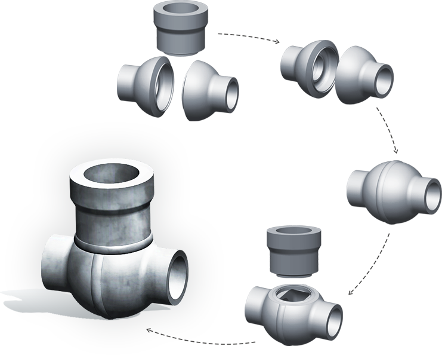
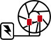
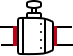

Инженерные разработки
ЗАО "АМК" постоянно ведет поиск принципиально новых технологических решений и внедряет их в жизнь.
Лито-сварные и
ковано-сварные
корпуса арматуры
ЗАО «АМК» предлагает
переход от литых
корпусов на
лито-сварные
и ковано-сварные
конструкции.

Корпуса арматуры высокого давления DN100-350 изготавливаются путем электрошлакового переплава стали с последующей кристаллизацией в центробежных формах и автоматической сваркой под слоем флюса. Литье, полученное таким способом отличается сложной кристаллической решеткой, высокой плотностью, отсутствием внутренних и внешних дефектов, неметаллических включений и шлака. Все корпуса и сварные швы проходят 100% УЗД и рентген контроль. По качеству и свойствам такие отливки не уступают штампованному металлу. Данный способ изготовления корпусов отличает отсутствие скрытых дефектов (свищей, раковин) и длительный срок службы изделия.
Корпуса задвижек среднего давления DN80-300 PN6,3-10,0 МПа изготавливаются в ковано-сварном исполнении. Это позволяет увеличить износостойкость и плотность металла, избежать дефектов, и в конечном итоге гарантирует Заказчикам длительный срок службы изделий.
Основные приоритеты при разработке новых моделей арматуры:
-

Увеличение ресурса деталей затвора (шпиндель, золотник, тарелки, седло) путем применения плазменных технологий наплавки, а также применение коррозионно-эрозионно стойких материалов для наплавки рабочих поверхностей. Например, традиционная наплавка уплотнительных поверхностей тарелок и седел задвижек (производство ОАО «Сибэнергомаш») — проволока 20Х13. Мы используем электроды ЦН-6Л. Наплавленный металл при использовании электродов ЦН-6Л имеет в три раза больший коэффициент эрозионной стойкости по сравнению с 20Х13;
-

Переход от литых корпусов к сварным конструкциям, отличающимся улучшенной структурой металла, отсутствием пор и раковин, меньшей металлоемкостью;
-
Разработка полнопроходных корпусов запорной арматуры;
-
Улучшение распыла охлаждающей воды, с применением для этих целей энергии пара, увеличением числа впрыскивающих устройств, применение форсунок с изменяющейся расходной характеристикой в зависимости от нагрузки;
-
Повышение эргономики.